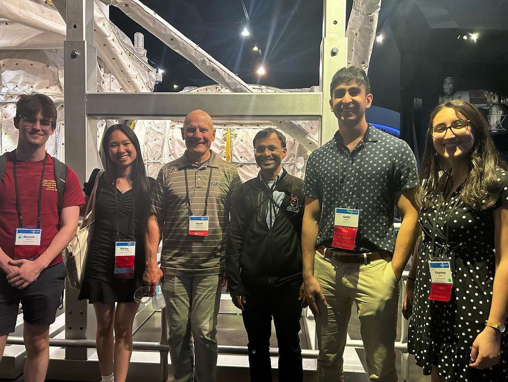
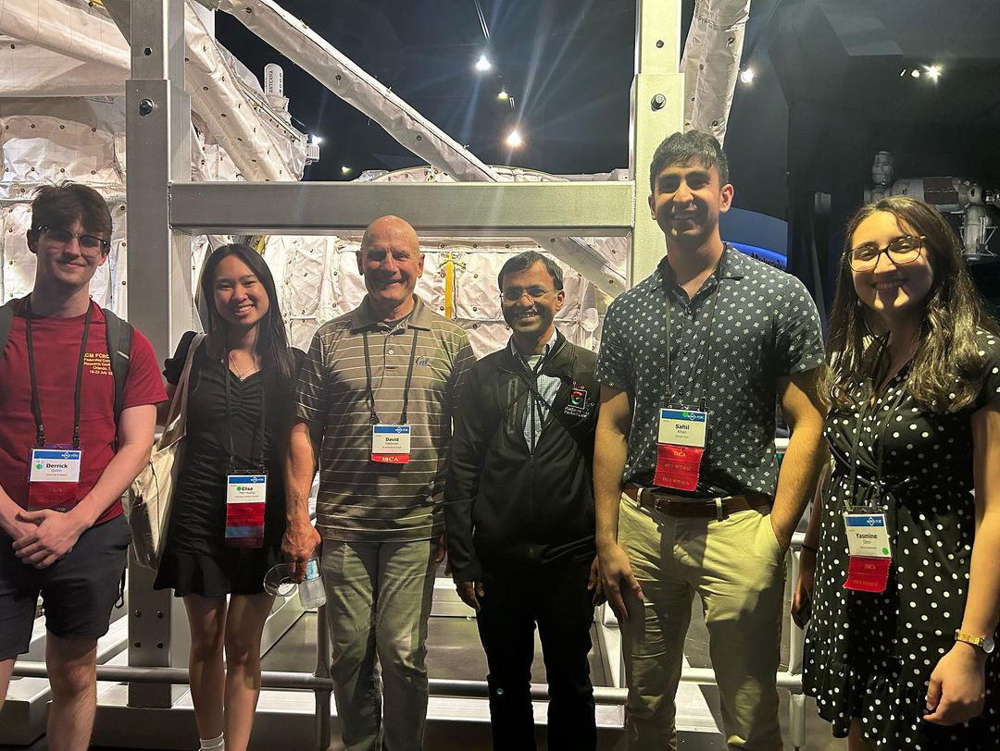

Yasmine Omri
Hello! I am a senior from Tunisia at Harvard College studying Electrical Engineering with a secondary in Computer Science.
Download CV
Connect
yasmineomri@college.harvard.edu
Hello! I am a senior from Tunisia at Harvard College studying Electrical Engineering with a secondary in Computer Science.

I am broadly interested in computer architecture, including energy-efficient processing, edge computing, and emerging technologies.
• Supervised by Professor Gage Hills. • Currently designing a real-time image to speech conversion system for the visually impaired, with a focus on the design, characterization, and optimization of the image classification specialized hardware.
• Supervised by Professor Vijay Janapa Reddi • Work under submission to ACM FAccT 2024. (Arxiv) • Assisted in the design of our own open-source person detection sensor by training and optimizing the machine learning model and setting up the deployment flow to the board • Led the charge on designing and conducting an experimental study with about forty participants to characterize the end-to-end performance of our open-source sensor and our partner company’s sensor, with variables such as distances, lights, person height, and skin tone.
• Supervised by Professor Vijay Janapa Reddi and Professor Gage Hills. • Designed bare metal C machine learning inference workloads for benchmarking the RISCV-based SERV serialized processor • Designed a memory decoder and several built-in self-tests (taped-out in spring 2023) • Designed a script to parse and analyze value dump files to position workloads on our roofline model, analyze memory access patterns, and compute necessary retention times.
I had the incredible opportunity to intern for 2 summers at Intel as a Logic Design Engineering Intern within the Media Encoding Team. I also had the opportunity to work in a Solar Energy Firm as an engineering intern and a Venture Capital Firm as an analyst intern.
Summer 2023, Summer 2022
Summer 2023 • Designed and developed a hang classification and targeted stall injection tool • Work approved by Intel for patent submission, and filed to the United States Patent and Trademark Office by Intel Legal for provisional approval in September 2023. • Developed a scalable hardware infrastructure for the tool including updates to the Intel hardware libraries • Designed the architectural specifications, the microarchitecture, and RTL code for a new functionality of a transform unit in an upcoming video encoder. • Developed and trained a machine learning model for the tool • Designed the architectural specifications, the microarchitecture, and RTL code for a new functionality of a transform unit in an upcoming video encoder.
Summer 2022 • Developed an automated and unified tool to collect coverage for programming parameters across the architecture, design, validation, and driver development stages for Media IP from scratch (released in current generation of video codecs). Provided feedback for architectural specifications improvement. • Work accepted and presented at the internal 2022 Intel Women’s Principal Engineers and Fellows Forum (WPEFF) Technical Symposium (Acceptance rate: 27%) • Designed and developed RTL for a quantization feature for the next generation video encoder. • Parameterized RTL to allow easy feature enabling/disabling and gate count reduction for a particular feature.

Summer 2021
• Sized and designed a 6 kWp low-voltage grid-connected photovoltaic plant (PVsyst . AutoCAD). • Learned about the regulatory scene of solar power integration.Winter 2020
• AfricInvest is a leading pan-African private equity and VC firm with $1.5 billion of assets under management and 160+ investments in 25 countries. • Performed market research, sector mapping, and investment analysis within AfricInvest Cathay Innovation Fund: a €150 million VC fund dedicated to growing innovative startups with a strong African angle. (5-week winter internship)I have enjoyed working on various projects in humanitarian design, digital design, TinyML, and in various classes.
• 2022-2023 Harvard Chapter Co-President (Harvard SEAS Article) • Chapter supervised by Professor Chris Lombardo.
• Access to clean water for a community in Kibuon, Kenya. • Led a team in the development of an excel-based tool for streamlining the design of solar-powered pumping systems, including water demand calculations, pump selection, photovoltaic array sizing, and protective equipment and wire selection. • Work to be submitted to the International Journal for Service Learning in Engineering, Humanitarian Engineering and Social Entrepreneurship• JPEG Encoder Design (with a classmate) | VLSI Class • MIPS Multi-Cycle Processor in SystemVerilog | Introductory Hardware Class • Bandgap Reference Circuit Design | Advanced Mixed-Signal CMOS Class • Folded-Cascode OTA Design | Advanced Mixed-Signal CMOS Class

• Gyroscope Controlled Musical Instrument (Teensy, circuit design, audio processing) with a classmate | Introductory EE Class (short demo) • "Unite": a web application that allows individuals and organizations to post and find volunteering opportunities | Introductory CS Class & very first college project! (demo)
Outside of classes, internships, and research, I significantly grew from teaching, conducting workshops, and helping lead a few clubs on campus.
• Teaching Fellow for the Circuits, Devices, and Transduction class (ES152) with Professor Gage Hills in fall 2022. • Supported undergraduate students through holding weekly problem-solving sessions, developing course summary handouts, and answering questions.
• Supported fellow Harvard students with the introductory course to electrical engineering through 1-on-1 weekly tutoring sessions as a tutor with the Harvard Academic Resource Center in spring 2022. • Topics included: circuit analysis techniques, digital-analog conversion, boolean algebra, digital design (combinational and sequential), basic signal processing.
• Assisted students with learning course material and working on problem sets for Harvard's introductory course to computer science CS50 in fall 2021:(C, introduction to data structures, Python, SQL, Flask, HTML, CSS, JavaScript) • Held weekly tutorials and office hours, answered questions on the course's online platform, graded tests.
• Delivered a TinyML workshop for about 30 undergraduate and graduate a students at Harvard (Fall 2022). Presented a survey of the field, the architectural design constraints and opportunities of edge AI, and led a hands-on keyword spotting deployment project on Arduino boards • Organized a TinyML image classification workshop with a guest engineer Sean Hymel from Edge Impulse in (Spring 2023) • Assisted in organizing an augmented reality workshop in collaboration with Brilliant Labs (Summer 2023) • Work recognized by the 2023 Harvard EE Community Contributions Award
Alongside Professor Reddi and Postdoc Matthew Stewart, I helped organize, and participated in an interdisciplinary research seminar on safeguarding user privacy and setting ethics and technical communication standards for the development of machine learning sensors at the Harvard Radcliffe Institute. The interdisciplinary discussion involved industry engineers, CEOs, academics as well as philosophers and sociologists, and has resulted in our current collaboration on a positioning paper.
• Joined the Harvard chapter in spring 2021 as a member of our Kenya team (clean water access project in Kibuon, Kenya). • As a co-president in 2022-2023, I co-led a board of project leads, fundraising directors, and programming and social directors.
• Closely collaborated with Harvard career advising services in organizing job and internship advising panels with upperclassmen and career advisors for Harvard engineering undergraduates.
• ISCA 2023 + Undergraduate uArch workshop | Full Travel Grant Recipient through CASA • Grace Hopper 2023 (virtual) | Awarded a Virtual Registration Grant through Harvard CS Department
 

Outside of engineering, I especially enjoy playing the violin with the Harvard Mozart Society Orchestra , oil painting, hiking, and spending time with my very cute cat "Louba" whenever I am back home.